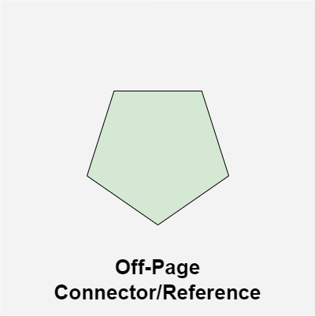

Vooskeemid (Flowchart) on lihtsad visuaalsed tööriistad, mis aitavad meil protsesse väga lihtsalt mõista ja kujutada. Nad kasutavad kujundeid, nagu nooled, ristkülikud ja teemandid, et näidata samme ja otsuseid selgelt. Kui keegi koostab projekti või selgitab keerulist ülesannet, võivad vooskeemid muuta keerukate ideede mõistmise lihtsamaks.
Vooskeeme kasutatakse nende pakutavate arvukate eeliste tõttu. Allpool on toodud mõned olulised põhjused vooskeemide kasutamiseks.
Need pakuvad keerulistele protsessidele ja algoritmidele selgust ja lihtsustamist, mis omakorda aitab teistel inimestel neid hõlpsalt mõista.
Vooskeemid pakuvad universaalset visuaalset keelt, millest saavad aru kõik erinevatesse meeskondadesse kuuluvad inimesed ja mis aitavad vähendada suhtlemisvigu.
Need on optimaalne lahendus standardsete tööprotseduuride, töövoogude või äriprotsesside dokumenteerimiseks. See muudab uute töötajate koolitamise lihtsamaks.
Vooskeemid aitavad parandada lahendatava probleemi visualiseerimist, mis võimaldab teha teadlikumaid ja andmepõhisemaid valikuid.
Ovaalne sümbol tähistab programmi loogikavoolus Start, Stop ja Halt. Pausi/peatamist kasutatakse programmiloogikas üldiselt teatud veatingimuste korral. Terminal on vooskeemi esimene ja viimane sümbol.
Rööpkülik tähistab mis tahes sisendi/väljundi tüüpi funktsiooni. Programmijuhised, mis võtavad sisendseadmetelt sisendit ja kuvavad väljundseadmete väljundit, on vooskeemil näidatud rööpkülikuga.
Kast tähistab aritmeetilisi juhiseid, konkreetset toimingut või toimingut, mis toimub protsessi osana. Kõik aritmeetilised protsessid, nagu liitmine, lahutamine, korrutamine ja jagamine, on tähistatud tegevuse/protsessi sümboliga.
Teemant sümbol tähistab otsustuspunkti. Otsustuspõhised toimingud, nagu jah/ei küsimus või tõene/väär, on vooskeemil tähistatud rombiga.
Kui vooskeemi muutub keeruliseks või see levib rohkem kui ühele lehele, on segaduste vältimiseks kasulik kasutada konnektoreid. konnektoreid kasutatakse hüppamiseks vooskeemi ühest osast teise ilma pikki või keerulisi jooni tõmbamata. On-Page Connector on kujutatud väikese ringiga.
Kui vooskeemi muutub keeruliseks või see levib rohkem kui ühele lehele, on segaduste vältimiseks kasulik kasutada konnektoreid. konnektoreid kasutatakse hüppamiseks vooskeemi ühest osast teise ilma pikki või keerulisi jooni tõmbamata. Off-Page Connector on tähistatud viisnurgaga.
Voolujooned näitavad käskude täitmise täpset järjestust. Nooled tähistavad juhtimisvoolu suunda ja suhet vooskeemi erinevate sümbolite vahel.
Vooskeem on algoritmi graafiline esitus. Vooskeemi loomisel peaks see järgima mõningaid reegleid